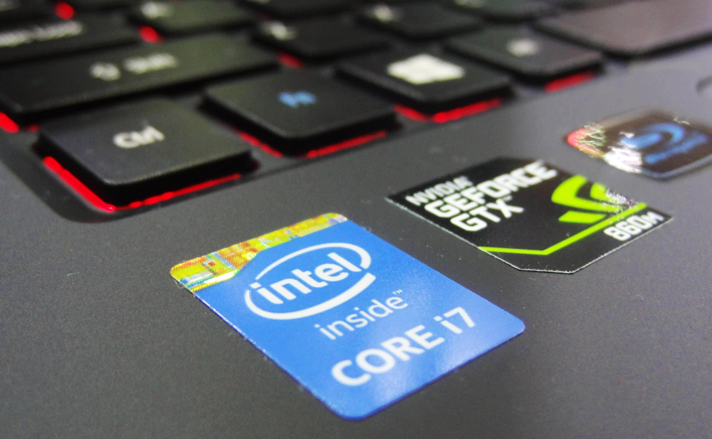
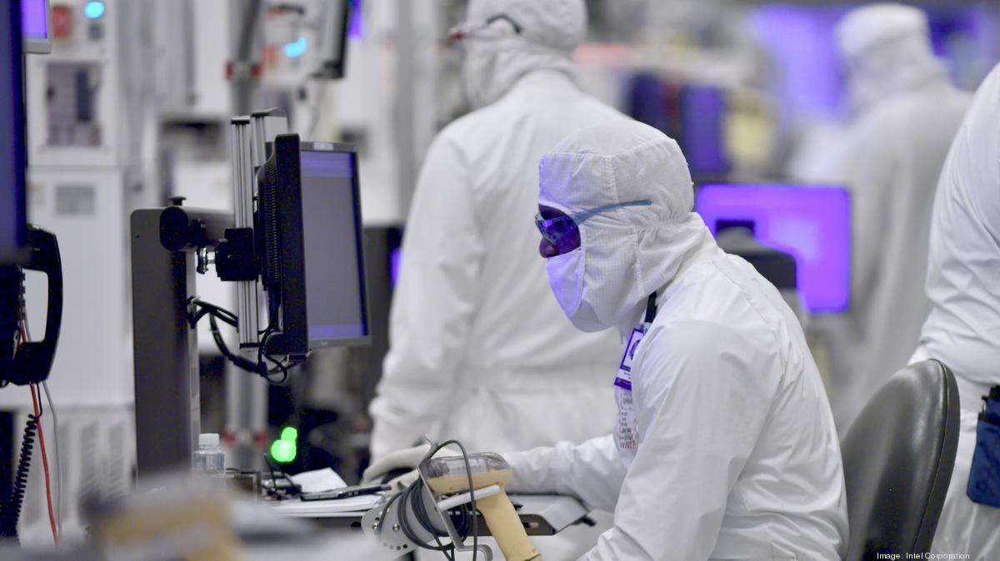
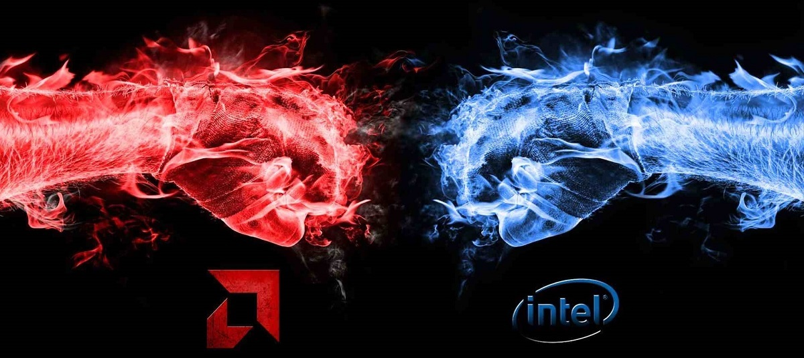
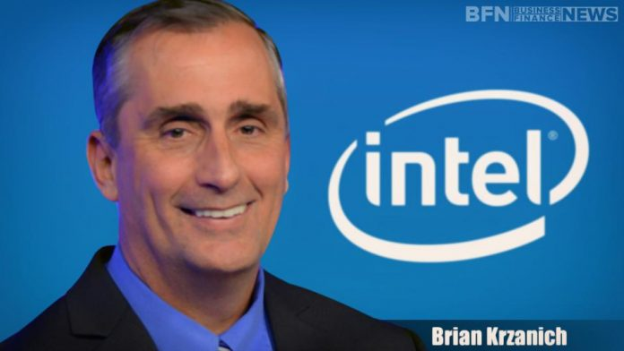
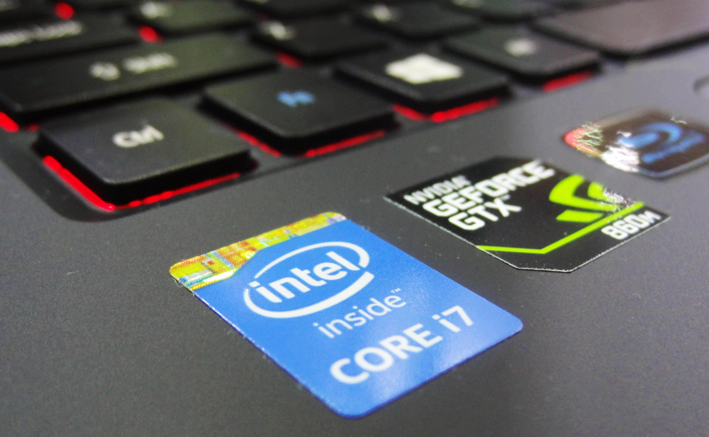
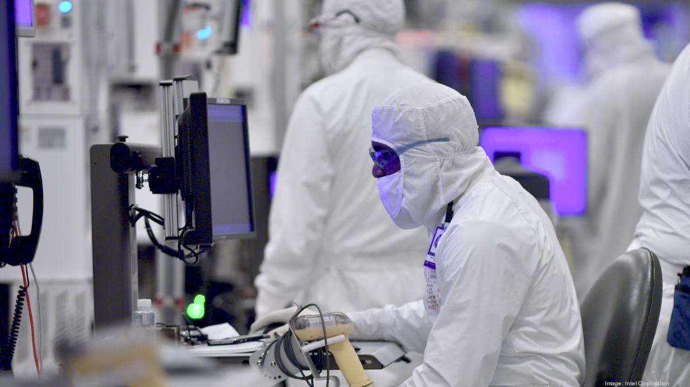
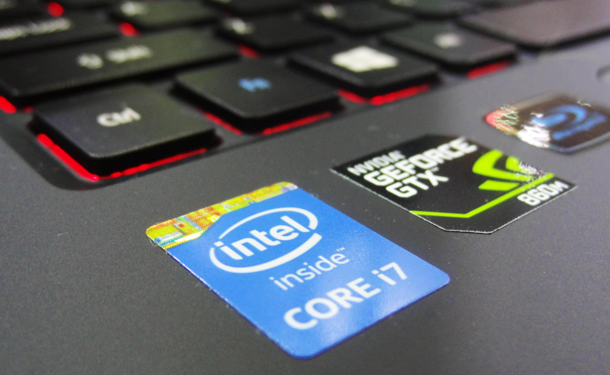
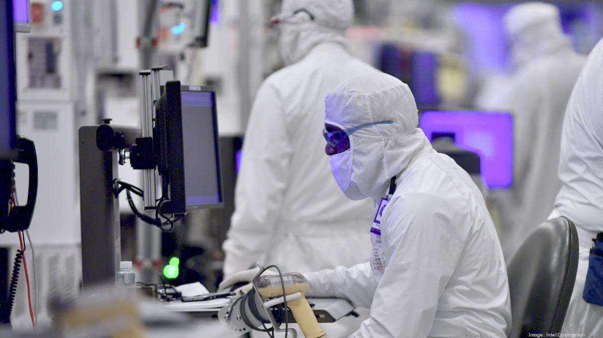

Společnost Intel Corporation je největším světovým výrobcem polovodičových obvodů a dalších zařízení.
Hlavní sídlo firmy je v kalifornském městě Santa Clara v USA, v lokalitě nazývané Silicon Valley.
Celé sídlo Intelu je složeno z komplexu několika budov, centrála je pak v budově pojmenované po zakladateli společnosti Robertu Noyceovi.
V sídle Intelu také naleznete muzeum mikroprocesorů.


Po celém světě pracuje pro společnost Intel přes 96 500 zaměstnanců.
Jako jedna z největších světových společností s ročním obratem 37,6 miliard $ (2008) a hodnotou 127 miliard $ (k 8. červnu 2006) je společnost kótována na mnoha světových burzách
Intel je znám mezi běžnými lidmi především svými procesory. Ročně jich vyrobí přes 100 miliónů, což je zhruba 75 % celosvětové produkce x86 procesorů (r. 2000).
Kromě procesorů pro osobní počítače vyrábí procesory pro PDA, čipsety, flash paměti, telekomunikační čipy i multimediální vybavení domácností (dětské elektronické mikroskopy a web kamery).
Porušování pravidel hospodářské soutěže v Evropské unii
Společnost byla založena Robertem Noycem, Gordonem Moorem (který se proslavil díky svému Moorově zákonu), Arthurem Rockem a Maxem Palevskym v roce 1968 pod původním názvem Integrated Electronics Corporation.
Moore a Noyce přišli z Fairchild Semiconductor a stali se tím prvními zaměstnanci. Rock nebyl zaměstnanec ale investor. Celková počáteční investice činila 2,5 milionu dolarů směnitelných dluhopisů a 10 tisíc dolarů od Arthura Rocka. Pouze 2 roky poté dokončil Intel svou první nabídku akcií (IPO) a získal 6,8 milionu dolarů (23 dolarů za akcii).
Třetí zaměstnanec Intelu Andy Grove byl původně chemický inženýr, který později po velkou část 80. a 90. let společnost řídil.
Hlavní konkurenti
Mezi konkurenty v PC chipsets patří Advanced Micro Devices, VIA Technologies, Silicon Integrated Systems a Nvidia. Mezi konkurenty společnosti Intel v oblasti vytváření sítí patří společnosti NXP Semiconductors, Infineon, Broadcom Limited, Marvell Technology Group a Applied Micro Circuits Corporation. Mezi konkurenty v oblasti flash paměti patří společnosti Spansion, Samsung, Qimonda, Toshiba, STMicroelectronics a SK Hynix.
Jediným významným konkurentem na trhu s procesory x86 je společnost Advanced Micro Devices (AMD), se kterou má Intel od roku 1976 plné dohody o vzájemných licencích: každý partner může po uplynutí určité doby využívat patentované technologické inovace druhého výrobce. Křížová licenční smlouva je však zrušena v případě konkursu nebo převzetí společnosti AMD.
Někteří menší konkurenti jako VIA Technologies vyrábějí nízko výkonné procesory x86 pro počítače s malým faktorem a přenosné zařízení. Příchod takových mobilních výpočetních zařízení, zejména smartphonů, však v posledních letech vedl k poklesu prodeje počítačů. Vzhledem k tomu, že více než 95% světových smartphonů v současné době používá procesory navržené společností ARM Holdings, ARM se stalo významným konkurentem na trhu procesorů Intel. ARM také plánuje proniknout na trh PC a serverů.


Vedení
Robert Noyce byl generálním ředitelem společnosti Intel při svém založení v roce 1968, následovaný spoluzakladatelem Gordonem Moorem v roce 1975. Andy Grove se stal prezidentem společnosti v roce 1979 a přidal titul generálního ředitele v roce 1987, kdy se Moore stal předsedou. V roce 1998, Grove následoval Moora jako předseda a Craig Barrett, již prezident společnosti, převzal. 18. května 2005, Barrett předal otěže společnosti k Paulu Otellini, kdo byl prezident společnosti a COO a kdo byl zodpovědný za Intel je design vyhrát v originálním IBM PC. Představenstvo zvolilo Otelliniho za prezidenta a generálního ředitele a Barrett nahradil Grove jako předseda představenstva. Grove odstoupil jako předseda, ale zůstal jako zvláštní poradce. V květnu 2009, Barrett odstoupil jako předseda představenstva a byl následován Jane Shaw. V květnu 2012, viceprezident společnosti Intel Andy Bryant, který zastával funkce finančního ředitele (1994) a výkonného ředitele (2007) společnosti Intel, vystřídal Shaw jako výkonného předsedy.
V listopadu 2012 prezident a generální ředitel Paul Otellini oznámil, že odstoupí v květnu 2013 ve věku 62 let, tedy tři roky před povinným důchodovým věkem společnosti. Během šestiměsíčního přechodného období zahájilo představenstvo společnosti Intel proces vyhledávání pro příštího generálního ředitele, v němž zvažovalo jak interní manažery, tak externí kandidáty jako Sanjay Jha a Patrick Gelsinger. Finanční výsledky ukázaly, že v rámci společnosti Otellini vzrostly příjmy společnosti Intel o 55,8 procenta (34,2 USD na 53,3 miliardy), zatímco čistý zisk vzrostl o 46,7% (7,5 miliardy USD na 11 miliard).
Dne 2. května 2013 byl výkonným viceprezidentem a výkonným ředitelem Brianem Krzanichem zvolen šestý generální ředitel společnosti Intel, který vstoupil v platnost 16. května 2013 na výročním zasedání společnosti. Rada údajně dospěla k závěru, že zasvěcenec může pokračovat v roli a vyvíjet dopad rychleji, aniž by se musel učit procesům společnosti Intel, a Krzanich byl vybrán na tomto základě. Jako prezident společnosti byla vybrána softwarová hlava společnosti Intel Renée James, která je na druhém místě v pozici generálního ředitele.
Představenstvo společnosti Intel se v květnu 2013 skládá z Andyho Bryanta, Johna Donahoeho, Frank Yearyho, velvyslance Charlene Barshefského, Susan Deckerové, Reeda Hundta, Paula Otelliniho, Jamese Plummera, Davida Pottrucka a Davida Yoffieho a kreativního ředitele. . Rada byla popsána bývalým novinářem Financial Times Tomem Foremski jako "příkladným příkladem správy a řízení společnosti nejvyššího řádu" a získala desítku ratingů od společnosti GovernanceMetrics International, což je forma uznání, která byla udělena pouze jednadvaceti dalším podnikovým radám. celosvětově. 21. června 2018 Intel oznámil odstoupení Briana Krzanicha z funkce generálního ředitele, s expozicí, kterou měl se zaměstnancem. Bob Swan byl jmenován dočasným generálním ředitelem, protože představenstvo zahájilo hledání stálého generálního ředitele. 31. ledna 2019 přešel Swan ze své role finančního ředitele a dočasného generálního ředitele a byl jmenován představenstvem jako 7. generální ředitel, který společnost vedl.
 


